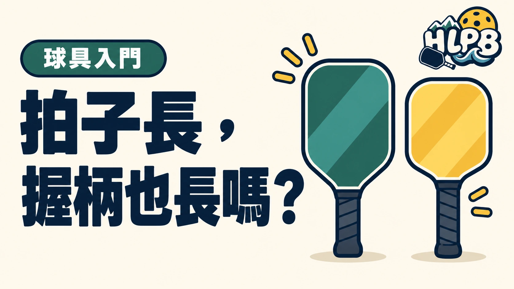

看到「加長拍」，先別以為握柄一定比較長。球拍總長包含拍面與握柄，不能只用總長判斷握柄空間。
三個尺寸分開看
| 規格 | 看的是什麼 |
|---|---|
| 球拍總長 | 整支球拍的長度 |
| 握柄長度 | 手能握住的柄部長度 |
| 握把周長 | 握把粗細 |
選拍時把三項分開看，再實際握拍，確認手指位置與雙手握拍空間。不要只看「加長」「長柄」等名稱。
USA Pickleball 器材規範限制球拍總長，以及長寬合計尺寸，但這些上限不是適合每個人的選拍答案。
總長增加，增加的可能是哪一段？
球拍總長是整支拍的外部尺寸；握柄長度只描述可握持的柄部。兩支總長相同的拍，可能採用不同的拍面與握柄比例。因此，想找雙手反拍空間時，應直接查握柄長度，再實際放上兩隻手確認，不能只用『加長型』篩選。
拍面與握柄交界也可能有不同輪廓。規格標示能幫助縮小選擇，但握的位置是否自然、上手是否擠到拍頸，仍需實際握持。
| 你在意的問題 | 主要查哪個尺寸 | 再確認什麼 |
|---|---|---|
| 雙手能否放得下 | 握柄長度 | 拍頸輪廓與自己的握持位置 |
| 握起來太粗或太細 | 握把周長 | 是否已纏外層握把布 |
| 想比較整拍長短 | 總長 | 拍面寬度、重量分布與揮動感 |
購買頁沒寫握柄長度怎麼辦？
請賣家提供完整型號、厚度版本與原廠規格頁；仍沒有數據，就要求可辨識量測位置的尺寸資訊。不要從商品照片的比例估算，也別將同系列另一版本的數字直接套用。最後把尺寸與重量一起比較：較長只是幾何差異，並不是更適合自己的保證。
延伸閱讀：匹克球拍握把怎麼選？
參考來源
最後查證：2026-10-19｜資料來源：USA Pickleball 官方資料；HLPB 編輯整理
返回文章列表